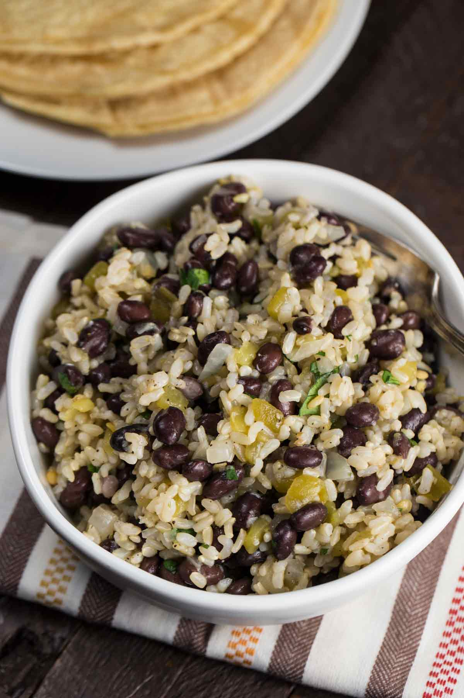

Green Chili Rice with Black Beans

Description
Ingredients
- 1 poblano chile pepper, seeded and diced small
- One 4-ounce can mild green chiles
- 1 cup coarsely chopped cilantro
- ½ cup spinach
- 4 cups Vegetable Stock, or low-sodium vegetable broth
- 1½ cups medium-grain brown rice
- 1 medium yellow onion, peeled and diced small
- 1 teaspoon ground cumin
- 1 jalapeño pepper, seeded and minced
- 2 cups cooked black beans, or one 15-ounce can, drained and rinsed
- Zest of 1 lime
- Salt to taste
Steps
-
Add the poblano pepper, green chiles, cilantro, and spinach to a blender and puree.
Add some of the Vegetable stock, as needed, to achieve a smooth consistency. Add the
mixture to a medium saucepan with the remaining vegetable stock. Add the brown rice
and bring to a boil over high heat. Reduce the heat to medium and cook, covered, until
the rice is tender, 45 to 50 minutes.
-
Place the onion in a large saucepan and sauté over medium heat for 7 to 8 minutes. Add
water 1 to 2 tablespoons at a time to keep the onion from sticking to the pan. Add the
cumin, jalapeño pepper, and black beans and cook for 5 minutes longer. Fold in the cooked
rice and lime zest. Season with salt.
Source
Recipe obtained from here